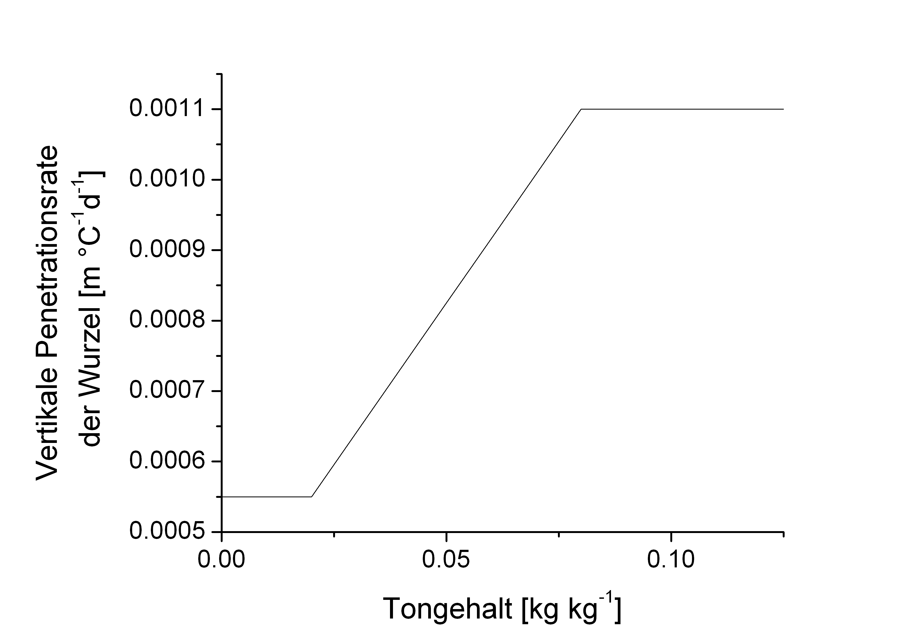

Root growth
The simulation of root growth follows the concept proposed by Pedersen et al. (2010). Root dry mass is distributed over depth according to Gerwitz & Page (1974), with rooting depth increasing exponentially with the modified thermal time. The crop-specific maximum rooting depth is adjusted using the soil-specific maximum rooting depth, which is calculated from the soil sand content and bulk density:
\(R_{max}\) Maximum rooting depth \([m]\)
\(R_{B_{max}}\) Crop-specific maximum rooting depth \([m]\)
\(R_{p_{max}}\) Soil-specific maximum rooting depth \([m]\)
and
\(R_{B_{max}}\) Soil-specific maximum rooting depth \([m]\)
\(f_s\) Soil sand content \([kg \, kg^{-1}]\)
\(\rho_B\) Soil bulk density \([kg \, m^{-3}]\)
whereas the influence of sand content is limited for values below 0.55 kg kg-1.
The crop-specific root penetration rate into deeper soil layers is reduced at low clay contents.

Figure 1: Vertical penetration rate of winter wheat roots in relation to soil clay content.
The thermal time for root growth is calculated based on a minimum temperature that limits root development:
\(DD_{root}\) Thermal time for root growth \([^{\circ}C \, d]\)
\(T_{av}\) Mean daily air temperature \([^{\circ}C]\)
\(T_{r\,min}\) Minimum temperature for root growth \([^{\circ}C]\)
The daily thermal increment is limited to 20°C.
Accordingly, the rooting depth is calculated as:
$\(R_z = R_{ini} + (DD_{root} - DD_{lag} ) \cdot k_{rz}\)
$\(R_z\) Current rooting depth \([m]\)
\(R_{ini}\) Rooting depth at sowing \([m]\)
\(DD_{root}\) Thermal time for root growth \([^{\circ}C \, d]\)
\(DD_{lag}\) Delay in root initiation \([^{\circ}C \, d]\)
The root length in the respective soil layer is then calculated from:
\(L_{root}\) Total root length \([m \, m^{-2}]\)
\(W_{root}\) Biomass in the root compartment \([kg \, m^{-2}]\)
\(l_r\) Crop-specific root length \([m \, kg^{-1}]\)
The distribution factor for root density in each soil layer is calculated as:
\(\lambda_z\) Distribution factor of root length density at depth \(z\) \([m \, m^{-3}]\)
\(\lambda_0\) Distribution factor of root length density at depth 0 \([kg \, m^{-3}]\)
\(a_z\) Shape factor
\(z\) Depth \([m]\)
\(R_z\) Rooting depth \([m]\)
\(q\) Ratio of absolute to simulated rooting depth
Using factors normalized to the range [0;1], the root length density in each soil layer is calculated as:
\(\Lambda_z\) Root length density at depth \(z\) \([m \, m^{-3}]\)
\(\lambda_z\) Distribution factor of root length density at depth \(z\) \([m \, m^{-3}]\)
\(z_{max}\) Maximum profile depth \([m]\)
\(L_{root}\) Total root length \([m \, m^{-2}]\)
Finally, the root diameter is assumed to decrease from crops with above-ground storage organs (cereals, maize, rapeseed, etc.) and to remain constant for crops with below-ground storage organs (sugar beet, potato, carrot, etc.):

Figure 2: Root diameter in relation to soil depth for crops with above-ground (‑‑‑) and below-ground (—) storage organs.
Reference
-
Gerwitz, A., Page, E.R. (1974): An empirical mathematical model to describe plant root systems. J. Apl. Ecol. 11, 773-781.
-
Pedersen, A., Zhang, K.F., Thorup-Kristensen, K., Jensen, L.S. (2010): Modelling diverse root density dynamics and deep nitrogen uptake - A simple approach. Plant Soil 326 (1-2), 493-510.